Pierre Ier le Grand portant le hausse-col aux armes de L’ordre impérial de Saint-André Apôtre le premier nommé créé le 30 aout 1698La phaléristique peut être définie comme une science auxiliaire de l'histoire qui a pour objet l'étude des ordres, des décorations, des médailles et des insignes de distinctions. Phaleristique et politique sont traditionnellement intimement liées car la création d’un ordre ou d’une médaille n’est jamais anodine. Fort de cette conviction nous souhaitons montrer que l’histoire de la phaléristique Russe en est une brillante illustration.
Une histoire récente
Pourtant ce n’est que fort tardivement, soit au début du XVIII° siècle, sous le règne réformateur de Pierre Ier le Grand (Пётр Великий, 1682-1725), empereur de toutes les Russies, que le pays ne mis en place un système de récompense semblable aux autres pays européens.
Pendant la révolution bolchévique l’ensemble des ordres et décorations impériales sera dissout par le Comité exécutif central de Russie et du Conseil des Commissaire du peuple par un décret du 10 novembre 1917 « Sur l'abrogation des états et des grades civils ». Toutefois les armées blanches, l'émigration et la descendance de la famille Romanov en exil, maintiendront tout de même le système de décorations russes mais dans une dimension quelque peu confidentielle.
Par la suite, la nouvelle Union des Républiques Socialistes Soviétique, fidèle à la tradition phaléristique russe développera son propre système de récompenses mais sans rechigner à quelques emprunts à l'ancien régime russe.
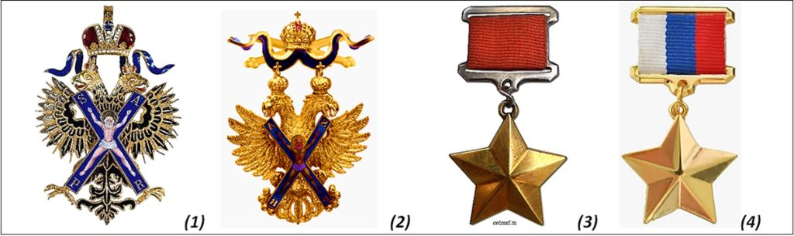
Enfin, la fédération de Russie depuis 1991, développera à son tour sa propre phaléristique qui se relèvera vite être un savant amalgame des traditions des ordres russes et soviétiques tout en développant sa propre culture phalerisique. Il convient aussi de rappeler en introduction que le premier des ordres russes impériaux était celui de « l’Ordre impérial de Saint-André l'apôtre, le premier nommé » (1) fondé en 1698 et qui sera réinstauré comme tel, mais sous le simple vocable « d’Ordre de Saint-André » (2) en 1998 par la Fédération de Russie. Côté Union Soviétique c’est « l'Etoile d'Or de Héros de l'Union Soviétique » (3) instaurée en 1934 qui tiendra la place de premier des ordres soviétiques et qui continue également à exister depuis 1992 comme premier titre honorifique de Héros de la Fédération de Russie (4).
Il n’empêche que, dans les deux cas, ces ordres furent relativement peut attribués, puisque seuls 1.000 dignitaires reçurent l’ordre de Saint André et 11.500 celui de Héros de l’URSS. Il est vrai que l’un comme l’autre de ces distinctions étaient réservées aux plus hauts dignitaires, personnages importants ou soldats héroïques de l’Etat tant à titre militaire que civil.
Assurément s’il existe bien un ordre qui traversa tous les régimes et dont le ruban (aux couleurs des Romanov) incarne la notion de « Mère Patrie » c’est bien celui de l’Ordre de Saint Georges.
Saint Georges et Catherine II de Russie
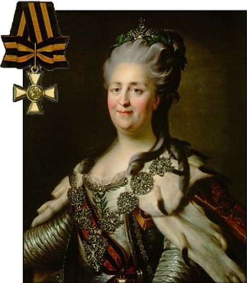
Catherine II portant le cordon de l’ordre de Saint-Georges (par Levitsky). Elle porte en sautoir l’ordre de Saint-André. En médaillon la médaille de 1ère classe de Saint-Georges.L’Ordre de Saint Georges n’est pourtant pas une création de Pierre le Grand, mais plutôt de la veuve du Tsar Pierre III de Russie : l’Impératrice Catherine II (qui avait sans doute fait assassiner le Tsar après le coup d’état du 28 juin 1762). Cette princesse allemande née le 2 mai 1729 à Stettin en Poméranie, et décédé le 17 novembre 1796 à Saint-Pétersbourg reçut rapidement le surnom de « La Grande Catherine », pour illustrer ses actions pendant son règne de 1762 à 1796. Celles-ci s’exprimèrent tant par son influence politique et économique à l’intérieur du pays que par le développement diplomatique et géographique extérieur et notamment par la lutte contre la Turquie etc… et surtout l’annexion de la Crimée en 1783, donnant ainsi à la Russie un accès maritime à la mère Noire.
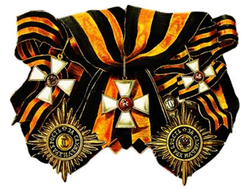
Ce n’est donc pas sans arrière-pensée que « La Grande Catherine » créa « l’ordre Impériale et Militaire de Saint-Georges, Martyr et Victorieux » le 26 novembre 1769.
Même si l’ordre restera peut attribué jusqu’à la révolution de 1917 (10.000 récipiendaires environ) il portera dès sa création, l’originalité de récompenser aussi bien de grands généraux que de simple soldats ou marins ayant fait preuve de courage au combat, concourant ainsi à lui donner un important prestige social ancré dans la mémoire des russes. Par la suite, de nombreuses médaille de Saint-Georges « pour la valeur ou le Courage » permettront d’étendre cette récompense à toutes les strates militaires de Russie.
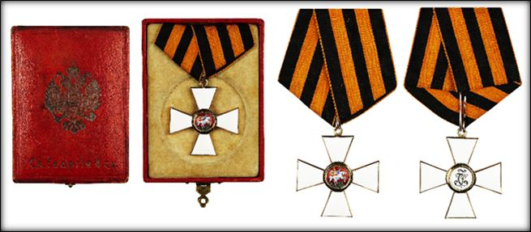
Coffret de l’Ordre de Saint-Georges XIX° siècle – La boite est frappée aux armes de la Russie Impériale
L’insigne de l’ordre de Saint-Georges représente Saint Georges terrassant le dragon, dans un médaille sur fond rouge posé sur une croix pâtée d’émail blanc dont la taille varie selon la classe (I° classe : 55 mm, II° classe : 47 mm, III° classe : 40 mm, IV° classe : 35 mm). Sur le revers de la croix figurent les initiales « C.I. » en cyrillique ce qui signifient « S.G.» pour Saint-Georges.
La couleur même du ruban de l’ordre de Saint-Georges est devenue le symbole du courage militaire russe. Composé d’un ruban jaune-orangé barré de 3 raies noires et finement bordé d’orange, il reprend les couleurs du drapeau impérial russe (jaune et noir) mais aussi les écharpes de commandement que portaient les officiers russes au XVIII° siècle qui était également jaunes rayées de noir.
L’Insigne de l’Ordre de Saint-Georges
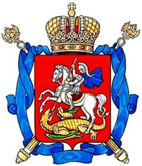
Armoiries de Moscou avec Saint-Georges terrassant le dragonSaint-Georges comme saint patron de l’ordre éponyme n’a pas été choisi au hasard par l’Impératrice Catherine II de Russie. En effet, les premiers souverains russes avaient adoptés ce saint car il symbolisait la lutte contre les envahisseurs (nomades Turques et Tartares) et ce dès le XI° siècle. D’ailleurs il n’était pas rare de constater dans l’iconographie Orthodoxe que le dragon terrassé par Saint-Georges (symbole de la victoire du BIEN sur le MAL) fut parfois carrément remplacé par un Tartare ou autre ennemi de la foi Orthodoxe !
Il faut dire que dès le début de la fondation de la « Sainte Russie », Saint-Georges, fut associé par le peuple russe comme un saint guerrier symbolisant la victoire sur les ennemis de la Patrie. A ce titre, Saint-Georges devint le protecteur de l’armée russe et le symbole de la gloire militaire ou du « Pobedanostsev » c’est-à-dire de « Celui qui apporte la victoire ».
Par la suite Le prince Dimitri Ier Donskoï, qui sauva la ville de Moscou à la fin du XIV° siècle de l’invasion des Mongols, proclama « Georges le Victorieux » comme saint patron de la ville et le donna pour symbole héraldique à la capitale de la Russie.
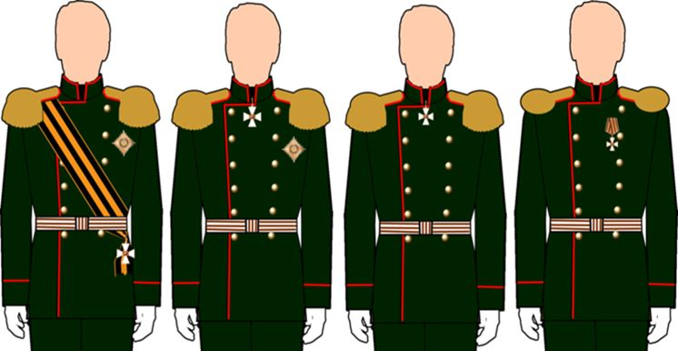
Façon de porter l’Ordre de Saint Georges de la 1ère à la 4ème classe
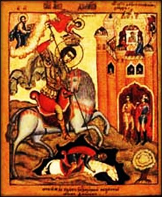
St Georges terrassant le Tatar (Autre version du dragon) Icone Russe du XVIII°
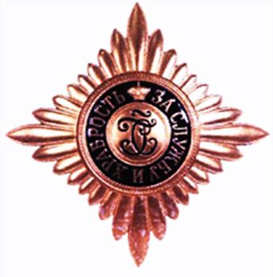
Doté d’un saint patron symbolisant le courage et la vaillance militaire l’Ordre de Saint-Georges de Russie se distingue aussi par son statut original, des autres ordres russes impériaux, car il récompense la bravoure personnelle au combat, ou les services distingués dans lesquels le récipiendaire s’est particulièrement illustré (25 ans de bons et loyaux services pour les officiers par exemple). Son attribution était strictement réglementée et légalement encadré. A ce titre l’ordre fut considéré comme une distinction militaire exceptionnelle mais ne porta jamais de glaives pour autant étant par essence un ordre militaire propre.
L’Ordre comporte 4 classes : La I° classe qui se compose d’un cordon aux couleurs de l’ordre avec la plaque, d’une II° classe qui est composée d’une croix de cou et de la plaque, d’une III° classe est une croix plus petite se portant au cou et enfin d’une IV° classe est une croix encore plus petite et attaché à un ruban plié en V (à la russe). La plaque de l’ordre en laiton doré d’environ 87 mm de diamètre est composée de rayons dorés posés en losange autour d’un médaillon sur fond d’émail bleu nuit portant les initiales de l’ordre avant la devise « Pour le Mérite Militaire et la Bravoure » sommée d’une couronne impériale. En 1807 une distinction dérivée de l’ordre, composée d’une croix pâtée sans émail est créée pour les rangs inférieurs de l’armée. Cette nouvelle croix était décernée pour actes de bravoure face à l’ennemi. En 1856 la croix de Saint-Georges dite pour les soldats est déclinée en quatre classes. Les insignes de 3e et 4e classes étaient en argent, ceux de 1re et 2e en or. Ils se portaient immédiatement à gauche des insignes des ordres avant toute autres décoration.
Les modifications apportées par Nicolas II
Le 10 aout 1913, le Tsar Nicolas II (1868-1918) décida de donner à cette distinction pour les soldats le nom officiel de « médaille de Saint-Georges ». Elle récompense les soldats, sous-officiers et infirmières tant à titre civil que militaire. Cette médaille compte 4 classes (2 degrés en or et 2 en argent), qui alloue au récipiendaire une rente annuelle (1° classe : 700 roubles, 2° classe : 400 roubles, 3° classes : 200 roubles et 4° rouble : 100 roubles). A l’époque 100 Roubles valait environ 2.500 €uros.
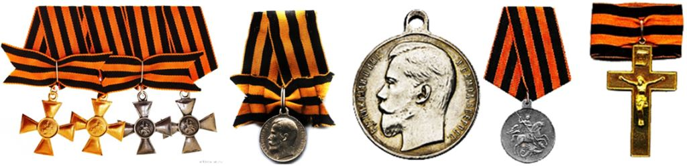
Médailles de Saint Georges « pour le courage », médailles de la bravoure avec portrait de Nicolas II (dont plusieurs soldats alliés seront honorés en 14-18) et croix pectorale pour les aumôniers militaires
La croix de la Passion pour le dernier des Tsars de Russie…
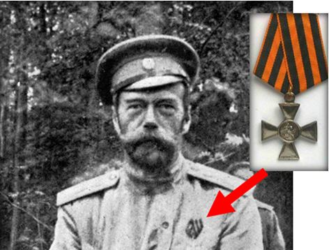
Avant d’être horriblement assassiné le 16 juillet 1918 par les bolchevick avec son épouse, l’impératrice Alexandra Fedorovna, ses quatre filles les grandes Duchesses Olga, Tatiana, Maria et Anastasia, son fils de 12 ans et demi, le tsarévitch Alexis, le médecin de la famille Ievgueni Botkine, la femme de chambre Anna Demidova, le valet de chambre Alexeï Trupp et le cuisinier Ivan Kharitonov, le Tsar Nicolas II fut détenu à Ekaterinbourg dans la fameuse maison Ipatiev. Pendant toute sa détention, la seule décoration que le dernier Empereur de toutes les Russies porta fut une simple croix de IV° classe de Saint Georges, symbole de la Passion que la famille impériale allait subir…
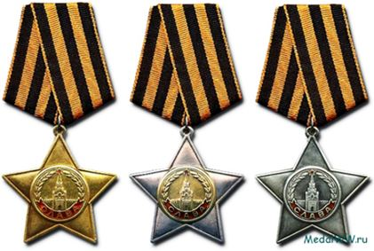
3 classes de l’Ordre de la Gloire (URSS)Quand on dit que comprendre l’âme slave est souvent compliqué pour un occidental, on ne sera pas surpris d’apprendre que ce furent les mêmes assassins du Tsar Nicolas II, qui décidèrent d’adopter le ruban de l’Ordre de Saint-Georges comme ruban de l’insigne de l’Ordre de la Gloire crée le 8 novembre 1943 et comprenant 3 classe.
Nous avons expliqué précédemment en quoi Saint-Georges symbolisait pour les russes la lutte du bien contre le mal.
Le ruban de l’Ordre de Saint-Georges repris par l’Union Soviétique
Naturellement les communistes ne pouvaient pas reprendre l’emblème chrétien de ce saint-chevalier mais ils gardèrent tout naturellement le ruban pour incarner la lutte du peuple russe contre le nazisme (symbole du mal) lors de la Grande Guerre patriotique (1941 à 1945). D’ailleurs par la suite de nombreux ordres ou médailles soviétiques reprendrons les couleurs de ce ruban, en voici quelques exemples :
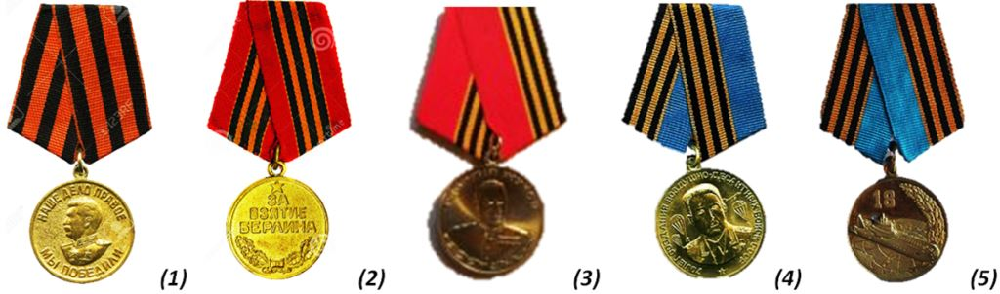
(1) Médailles de la Victoire sur l’Allemagne, (2) Médaille de la Capture de Berlin (3) Médaille du 50° anniversaire de la Victoire de la Grande Guerre Patriotique (ou médaille de Joukov), (4) Médaille des Troupes Aéroportées et (5) Médailles des 40 ans des sous-marins atomiques
L’Ordre de Saint-Georges restauré par la Fédération de Russie
Après la chute du Mur de Berlin et de l’URSS, la fédération de Russie fut instaurée en 1991 et se démarqua de l’Union Soviétique en réformant l’organisation phaléristique du Pays. Toutefois, elle eut le mérite et la grande originalité par rapport aux autres pays européens de non seulement conservé en l’état nombre d’ordres et médailles instaurés par l’URSS, tout en réhabilitant de nombreux ordres impériaux tout en développant sa propre phaléristique. Bref, cela fait de la fédération de Russie sans doute l’un des pays les plus riches en origine, en histoire, en créativité et en symbolisme phaléristique. Cette tendance ne risque pas d’ailleurs de s’atténuer vu la créativité de l’actuel ministre de la Défense et des différents ministères pour créer autour des récompenses attribués aux Russes et à leurs alliés une véritable culture phaléristique commune destinée à créer les valeur de la Nouvelle Russie. C’est donc tout naturellement que la Fédération de Russie - tout en gardant les médailles soviétiques utilisant le ruban de Saint-Georges – décida de recréer l’ordre de Saint-Georges (cette fois-ci sans le qualificatif de « Martyr et victorieux ») sur un projet de 1992 et créé officiellement par Décret présidentiel N° 1463 du 8 août 2000 puis N°1463 du 7 septembre 2010 modifié par décret 1099 du 7 septembre 2010. De nos jours, l’Ordre de Saint-Georges de la fédération de Russie compte 4 classes qui se portent de la même façon que sous l’Empire et constitue le deuxième ordre honorifique de Russie (après celui (également restauré le 1er juillet 1998) de l’Ordre de l’Apôtre Saint-André le premier nommé et indépendamment des titres honorifiques de héros de la fédération de Russie (20 mars 1992) ou de Pilote (cosmonautes, militaires ou navigateurs) de Russie (idem).
Les Insignes actuels de l’Ordre de Saint-Georges en Russie
La restauration de l'ordre de Saint-Georges par la fédération de Russie concerne également, les croix de Saint-Georges pour soldat et sous-officier, ainsi que les "boucles" de Saint-Georges pour longue durée de service militaire. La seule différence entre l’ordre impérial et l’ordre actuel porte sur la présence au revers de la branche inférieure de la croix, de la présence d’un numéro d'enregistrement correspondant au diplôme attribué au récipiendaire.
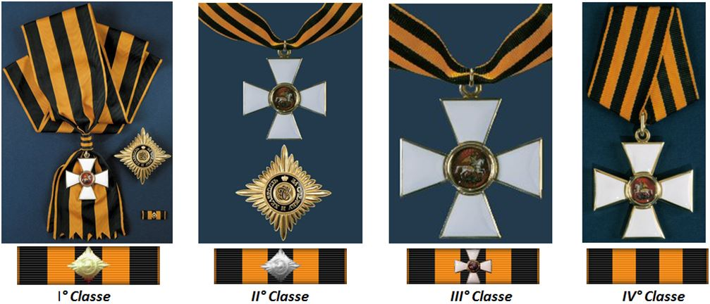
Ci-dessous, coffret actuel de 1° classe de l’Ordre de Saint-Georges avec son diplôme et sa barrette (dixmude). Sur la droite on trouvera un coffret original des 4 degrés de l’Ordre de Saint-Georges avec sa plaque et son grand cordon. L’Ordre de Saint-Georges contemporain dans sa version émaillée pour les croix ou en laiton pour les médailles reprend la même présentation que l’Ordre sous l’Empire. On notera toutefois une finition particulièrement soignée des modèles diffusés par les différents médaillers russes.
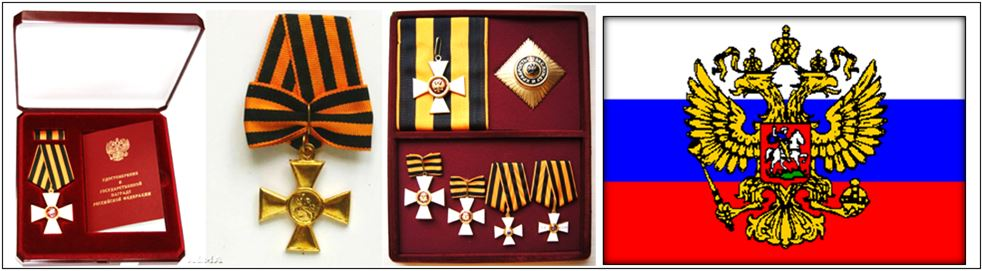
Le Drapeau de la Fédération de Russie (en russe : Флаг России) adopté le 11 décembre 1993 est le drapeau national et le pavillon marchand de la Fédération de Russie. Ce drapeau remonte au règne du Tsar Pierre le Grand (1682 – 1725). Avant cette date le pays n’avait pas de drapeau officiel mais utilisait le blason des princes de Moscovie (Saint-Georges terrassant le dragon sur fond rouge) apparu en 1390 sur le blason de Vassili Dmitrievitch. Le 7 mai 1883, le tsar Nicolas II décida que l’utilisation du pavillon russe uniquement maritime deviendrait également à usage terrestre et incarnerait le drapeau national Russe en 1896. Symboliquement les trois bandes sont interprétées comme le tsar (blanc), le ciel (bleu) et le peuple (rouge). Par la suite la couleur rouge signifierait : la souveraineté et la puissance ; le bleue : la couleur de la Vierge Marie, protégeant la Russie et le blanc : la couleur de la liberté et de l’indépendance. Ces trois couleurs deviendront le drapeau officiel de la Fédération de Russie depuis 1993 avec L’aigle bicéphale portant en son centre le blason de Moscou.
Des Insignes et traditions de l’Ordre toujours vivantes
Un système d’armes d’Honneur existait sous l’Empire pour distinguer les récipiendaires. Cela s’exprimait donc sur les cocardes de casquettes (officiers et soldats) de l’unité des membres de l‘Ordre pendant la guerre 14-17, sur des dragonnes d’épées ou de sabres, des hampes de drapeaux régimentaires ou des clairons qui étaient régulièrement présentés aux couleurs de l’Ordre de Saint-Georges. De nos jours c’est le ruban de l’ordre qui symbolise en lui-même le courage de tout un pays.
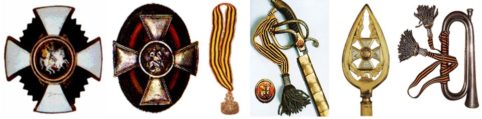
Il faut dire qu’aussi bien pendant les guerres impériales des XIX° et XX° siècles, que lors des conflits de la Grande Guerre Patriotique 1941-1945 ou en Afghanistan, qu’à la suite des batailles actuelles, le ruban jaune-orange aux raies noires à toujours symbolisé l’esprit patriotique de la Grande Russie, au même titre d’ailleurs que le coquelicot rouge anglais ou le bleuet français depuis le premier conflit mondial.
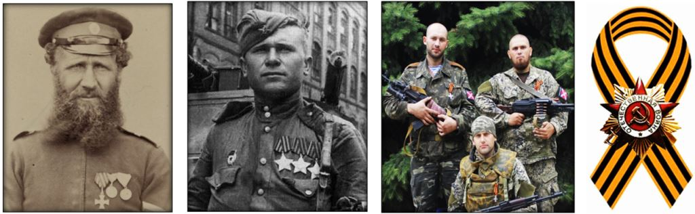
Lors des conflits de l’Empire, sur l’ordre du courage de la 2° guerre mondiale ou lors des conflits actuels, comme à l’occasion du Jour de la Victoire le 9 mai (sur lequel est alors posé l’ordre de la Guerre Patriotique), le ruban de l’ordre de Saint-Georges symbolise par excellence le courage militaire Russe.
De nos jours les joailliers russes proposent de magnifique croix de Saint-Georges avec feuilles de chênes en laiton doré et croix en émail sertie de strass (Swarovski). Pourtant sous l’Empire la croix de Saint-Georges n’était jamais assortie de diamant ni de glaives.
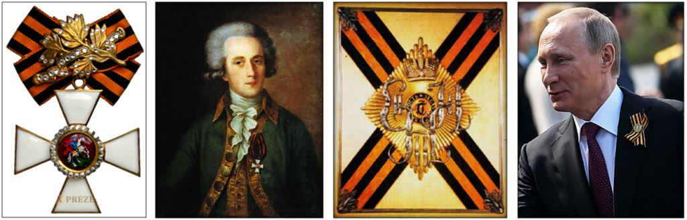
Portait d’un officier de l'Ordre de George vers 1790 ; Statuts de l'ordre de Saint-Georges en 1913 avec le monogramme de Catherine II et Vladimir Poutine portant le ruban de l’Ordre le Jour de la Victoire à Moscou. La tradition de l’Ordre de Saint-Georges demeure plus que jamais bien vivace en Russie depuis 1769 !
Partager cette page